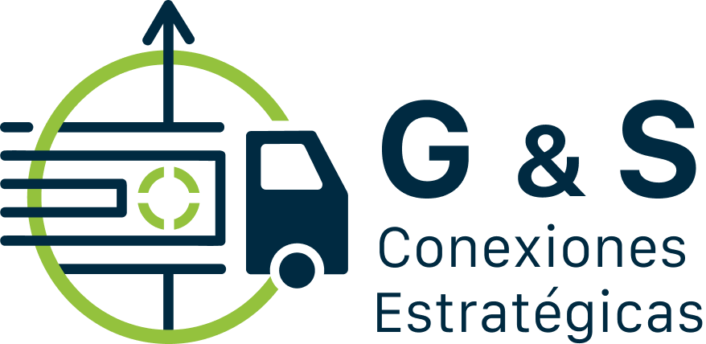

Más de 20 años transportando la carga que mueve la industria en Antioquia — con la confianza de una empresa familiar y el compromiso con un planeta más limpio.
Habla con nosotros por WhatsAppTransporte de carga industrial confiable, con foco en la cadena de reciclaje del PET.
Movemos grandes volúmenes con la puntualidad que la operación de tu empresa necesita.
Especialistas en el transporte de material PET dentro del ciclo de economía circular.
Base en Antioquia, con operación a nivel nacional según el requerimiento del cliente.
Concentramos capacidad y control donde está nuestra operación diaria; el resto del país se atiende de forma planificada según ruta y volumen.
Medellín y municipios del área metropolitana. Operación diaria y respuesta inmediata.
Rionegro, Marinilla, La Ceja y corredor industrial del oriente. Base operativa consolidada.
Operamos a nivel nacional según la ruta y el volumen del proyecto, con capacidad coordinada.
Fundada por Gentil y Santiago, padre e hijo.
Parte activa de la cadena de reciclaje del PET.
Decisiones rápidas, sin intermediarios.
Antioquia fijo, resto del país bajo demanda.
Cada tonelada que movemos hace parte de un ciclo real: sin transporte confiable, el material reciclable no llega a la planta que lo transforma. Este es nuestro aporte, en cifras.
Nos cuentas qué necesitas transportar.
Respuesta ágil, sin vueltas.
Definimos fecha y punto de recogida.
Con el seguimiento que tu operación necesita.
G&S nació como una empresa familiar fundada por Gentil y Santiago, padre e hijo. Su historia se construye ruta a ruta.
Gentil funda la empresa con un solo vehículo y la convicción de hacer las cosas bien.
Santiago se une al negocio familiar; la operación crece en flota y cobertura.
G&S se especializa en el transporte de PET, conectando recuperación y reciclaje.
Transportamos cerca de 2.500 toneladas de PET al mes, con la mirada puesta en seguir creciendo.
"Construimos esto camión a camión, cliente a cliente." — Gentil y Santiago cita a confirmar con el cliente
Escríbenos y te respondemos directo, sin intermediarios.
Escríbenos por WhatsApp — [número a confirmar]